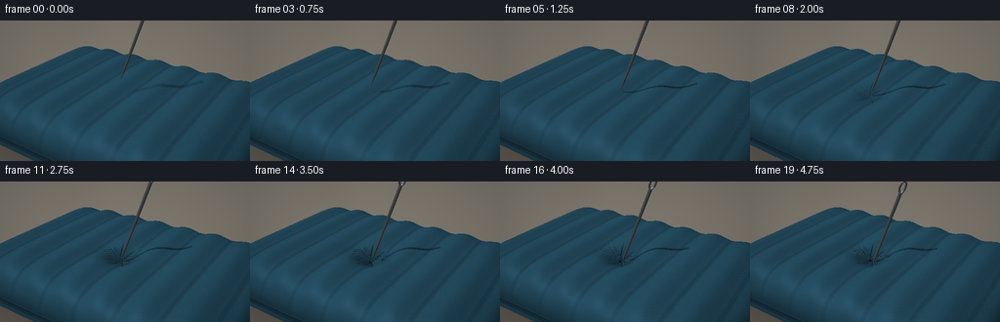
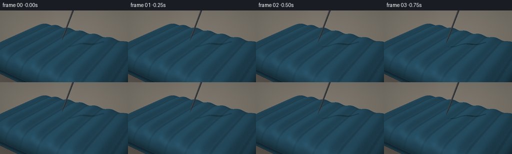
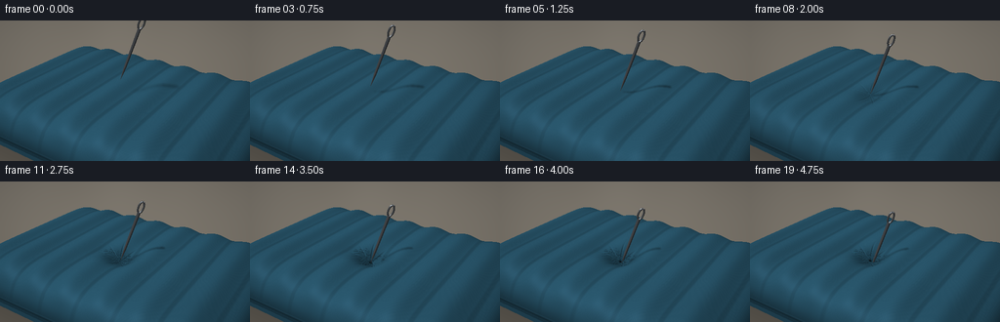
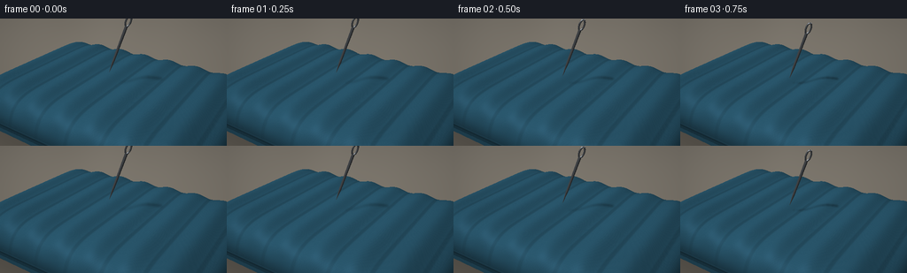
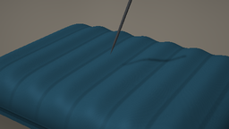
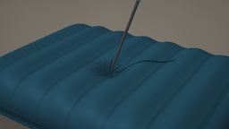

CODING AGENTS AS PIXEL WORLD MODELS
traex/GPT-6.1-Sol · mechanics_0035
点击播放 · 原生 RGB 像素
逐轮保存的候选
回放视频、检查图与代码变化。
每份候选均可单独播放。实际图片检查记录在下方工具轨迹中。
候选 01播放与检查图
点击播放 · 原生 RGB 像素


展开代码变化
--- 上一保存版本
+++ 本次保存版本
@@ -0,0 +1,180 @@
+import numpy as np
+from PIL import Image, ImageFilter
+from pathlib import Path
+from artifact_io import save
+
+ROOT=Path(__file__).resolve().parent
+W,H,S=256,144,2
+w,h=W*S,H*S
+rng=np.random.default_rng(46)
+def unit(a):
+ return a/np.linalg.norm(a,axis=-1,keepdims=True)
+def smooth(t):
+ t=np.clip(t,0,1);return t*t*(3-2*t)
+cam=np.array([4.5,-7.0,5.0])
+target=np.array([0.,0.,.80])
+fwd=unit(target-cam);right=unit(np.cross(fwd,[0,0,1]));up=np.cross(right,fwd)
+y,x=np.mgrid[:h,:w]
+scale=np.tan(np.deg2rad(39)/2)
+rays=unit(fwd+right*((x+.5-w/2)/(w/2)*scale)[...,None]+up*((h/2-y-.5)/(w/2)*scale)[...,None])
+light=unit(np.array([-3.0,-4.5,8.]))
+a,b=3.7,2.65
+px,py=.10,-.38
+
+def height(X,Y,depth=0):
+ q=(X/a)**8+(Y/b)**8
+ edge=np.sqrt(np.maximum(0,1-q))
+ rib=.105*(.5+.5*np.cos(2*np.pi*(X+.12)/.92))*(edge**1.4)
+ z=.035+.88*edge+rib
+ dx=X-px;dy=Y-py;r2=(dx/.46)**2+(dy/.46)**2
+ z-=depth*np.exp(-r2*1.0)
+ # Tension gathers into short radial creases around the pressure point.
+ theta=np.arctan2(dy,dx);r=np.sqrt(dx*dx+dy*dy)
+ crease=(np.maximum(0,np.cos(theta*9+r*2.5))**14)
+ z-=depth*.14*crease*np.exp(-((r-.29)/.22)**2)
+ return z,q
+
+# Fixed-view base intersection, with a bounded sampled search and accurate bisection.
+base=np.full((h,w),np.inf)
+lo=np.zeros((h,w));hi=np.zeros((h,w))
+near=(1.12-cam[2])/rays[...,2];far=(-.42-cam[2])/rays[...,2]
+prev=near.copy()
+for k in range(100):
+ t=near+(far-near)*(k/99)
+ p=cam+rays*t[...,None]
+ z,q=height(p[...,0],p[...,1])
+ inside=(q<1)&(p[...,2]<=z)&(p[...,2]>=-.40*np.sqrt(np.maximum(0,1-q)))
+ take=inside&np.isinf(base)
+ lo[take]=prev[take];hi[take]=t[take];base[take]=t[take]
+ prev=t
+mask=np.isfinite(base)
+for _ in range(15):
+ m=(lo+hi)*.5;p=cam+rays*m[...,None];z,q=height(p[...,0],p[...,1])
+ inside=(q<1)&(p[...,2]<=z)
+ hi=np.where(mask&inside,m,hi);lo=np.where(mask&~inside,m,lo)
+base=np.where(mask,(lo+hi)/2,0)
+
+# Background: warm defocused studio, with a softly mottled ground.
+bg=np.zeros((h,w,3),float)
+cloud=np.asarray(Image.fromarray(rng.integers(0,255,(24,40),dtype=np.uint8)).resize((w,h),Image.Resampling.BICUBIC).filter(ImageFilter.GaussianBlur(28)),float)/255
+for c,val in enumerate([123,117,107]):bg[...,c]=val+cloud*13-(y/h)*12
+floor_t=(-.47-cam[2])/rays[...,2];floor=cam+rays*floor_t[...,None]
+fq=(floor[...,0]/3.85)**8+(floor[...,1]/2.8)**8
+shadow=.26*np.exp(-np.maximum(fq,0)*.85)
+bg*=1-shadow[...,None]
+
+D=unit(np.array([.32,.12,1.]))
+B=unit(right-D*np.dot(right,D));C=np.cross(D,B)
+
+def segment_intersect(ro,rd,start,axis,s0,s1,r0,r1):
+ rel=ro-start
+ sv=np.sum(rel*axis,axis=-1);dv=np.sum(rd*axis,axis=-1)
+ rp=rel-sv[...,None]*axis;dp=rd-dv[...,None]*axis
+ slope=(r1-r0)/(s1-s0);rad=r0+slope*(sv-s0)
+ A=np.sum(dp*dp,axis=-1)-(slope*dv)**2
+ bb=2*(np.sum(rp*dp,axis=-1)-rad*slope*dv)
+ cc=np.sum(rp*rp,axis=-1)-rad*rad
+ disc=bb*bb-4*A*cc
+ root=np.sqrt(np.maximum(0,disc))
+ t1=(-bb-root)/(2*A);t2=(-bb+root)/(2*A)
+ out=np.full(rd.shape[:-1],np.inf)
+ for t in [t1,t2]:
+ ss=sv+t*dv
+ valid=(disc>=0)&(t>1e-5)&(ss>=s0)&(ss<=s1)
+ out=np.minimum(out,np.where(valid,t,np.inf))
+ safe=np.where(np.isfinite(out),out,0)
+ ss=sv+safe*dv;perp=rp+safe[...,None]*dp
+ norm=unit(perp-(slope*(r0+slope*(ss-s0)))[...,None]*axis+1e-15)
+ return out,norm
+
+def needle(ro,rd,tip,eye=True):
+ dist,norm=segment_intersect(ro,rd,tip,D,0,.38,0,.031)
+ t,n=segment_intersect(ro,rd,tip,D,.38,2.23,.031,.040)
+ take=t<dist;dist=np.minimum(dist,t);norm=np.where(take[...,None],n,norm)
+ if eye:
+ # An open, elongated eye at the blunt end, built from polished tubular arcs.
+ for i in range(20):
+ th1=2*np.pi*i/20;th2=2*np.pi*(i+1)/20
+ p1=tip+D*(2.37+.145*np.cos(th1))+B*(.062*np.sin(th1))
+ p2=tip+D*(2.37+.145*np.cos(th2))+B*(.062*np.sin(th2))
+ axis=unit(p2-p1);length=np.linalg.norm(p2-p1)
+ t,n=segment_intersect(ro,rd,p1,axis,0,length,.023,.023)
+ take=t<dist;dist=np.minimum(dist,t);norm=np.where(take[...,None],n,norm)
+ return dist,norm
+
+frames=[]
+baseheight=float(height(px,py)[0])
+for frame in range(20):
+ t=frame/19
+ press=smooth((t-.23)/.48)
+ penetration=smooth((t-.66)/.34)
+ depth=.30*press-.06*penetration
+ gap=.30*(1-smooth(t/.27))
+ tip=np.array([px,py,baseheight-depth+gap-.26*penetration-.009*press])
+ # Re-intersect the locally depressed surface. Outside the contact patch the base stays fixed.
+ ts=base.copy()
+ for _ in range(9):
+ p=cam+rays*ts[...,None]
+ z,q=height(p[...,0],p[...,1],depth)
+ eps=.001
+ zx=(height(p[...,0]+eps,p[...,1],depth)[0]-height(p[...,0]-eps,p[...,1],depth)[0])/(2*eps)
+ zy=(height(p[...,0],p[...,1]+eps,depth)[0]-height(p[...,0],p[...,1]-eps,depth)[0])/(2*eps)
+ f=p[...,2]-z;df=rays[...,2]-zx*rays[...,0]-zy*rays[...,1]
+ step=np.clip(f/(df-1e-12),-.13,.13)
+ ts=np.where(mask,ts-step,ts)
+ p=cam+rays*ts[...,None]
+ z,q=height(p[...,0],p[...,1],depth)
+ eps=.001
+ zx=(height(p[...,0]+eps,p[...,1],depth)[0]-height(p[...,0]-eps,p[...,1],depth)[0])/(2*eps)
+ zy=(height(p[...,0],p[...,1]+eps,depth)[0]-height(p[...,0],p[...,1]-eps,depth)[0])/(2*eps)
+ n=unit(np.stack([-zx,-zy,np.ones_like(z)],axis=-1))
+ lam=np.maximum(0,np.sum(n*light,axis=-1))
+ edge=np.sqrt(np.maximum(0,1-q))
+ # Deep slate-blue flocked textile, with woven microtexture and welded rib troughs.
+ X,Y=p[...,0],p[...,1]
+ fiber=np.sin(X*720)*np.sin(Y*770)*.8+np.sin(X*1490+Y*52)*.65
+ grain=np.sin(X*291.1+Y*531.7)*np.sin(X*349.7-Y*263.2)*1.05
+ basecol=np.empty((h,w,3));basecol[:]=[38,79,99]
+ side=smooth((.55-p[...,2])/.45)
+ basecol*=1-side[...,None]*.17
+ trough=np.exp(-((np.cos(2*np.pi*(X+.12)/.92)+1)/.075)**2)*edge
+ basecol*=1-.12*trough[...,None]
+ ao=1-.26*(depth/.30)*np.exp(-((X-px)**2+(Y-py)**2)/.15)
+ lit=(.43+.61*lam)*ao
+ col=basecol*lit[...,None]+(fiber+grain)[...,None]
+ halfv=unit(light-rays)
+ shine=np.maximum(0,np.sum(n*halfv,axis=-1))**30
+ col+=shine[...,None]*np.array([8,12,15])
+ # Double welded perimeter line on the round inflated edge.
+ seam=np.exp(-((p[...,2]-.135)/.019)**2)*smooth((q-.70)/.20)
+ col=col*(1-seam[...,None]*.23)
+ rim=np.exp(-((p[...,2]-.18)/.014)**2)*smooth((q-.73)/.20)
+ col+=rim[...,None]*np.array([5,8,10])
+ # Cast fine needle shadow across the mattress, softened according to the air gap.
+ sd,_=needle(p+n*.003,np.broadcast_to(light,p.shape),tip,False)
+ sh=np.isfinite(sd).astype(float)
+ sh=np.asarray(Image.fromarray(np.uint8(sh*255)).filter(ImageFilter.GaussianBlur(S*(.35+gap*2))),float)/255
+ col*=1-.45*sh[...,None]
+ r2=((X-px)/.060)**2+((Y-py)/.050)**2
+ punct=np.exp(-r2*2.3)*smooth((t-.57)/.2)
+ col=col*(1-.88*punct[...,None])
+ image=np.where(mask[...,None],col,bg)
+ nd,nn=needle(cam,rays,tip)
+ visible=np.isfinite(nd)&((~mask)|(nd<ts))
+ nl=np.maximum(0,np.sum(nn*light,axis=-1))
+ view=np.maximum(0,np.sum(nn*(-rays),axis=-1))
+ reflection=2*np.sum(nn*(-rays),axis=-1)[...,None]*nn+rays
+ band=np.exp(-((reflection[...,2]-.50)/.25)**2)
+ metal=(37+nl*44+band*115+view**10*38)
+ spec=np.maximum(0,np.sum(nn*halfv,axis=-1))**65
+ metal+=spec*180
+ steel=np.stack([metal*.94,metal*.98,metal*1.025],axis=-1)
+ image=np.where(visible[...,None],steel,image)
+ vignette=1-.095*((x-w/2)**2/(w/2)**2+(y-h/2)**2/(h/2)**2)
+ image*=vignette[...,None]
+ img=Image.fromarray(np.uint8(np.clip(image,0,255))).resize((W,H),Image.Resampling.LANCZOS)
+ frames.append(np.asarray(img))
+ img.save(ROOT / ".tmp" / f"render_{frame:02d}.png")
+ print(frame, flush=True)
+np.save(ROOT / ".tmp" / "rgb.npy", np.stack(frames))
+save(np.stack(frames),ROOT)
候选 02播放与检查图
点击播放 · 原生 RGB 像素


展开代码变化
--- 上一保存版本
+++ 本次保存版本
@@ -31,7 +31,7 @@
# Tension gathers into short radial creases around the pressure point.
theta=np.arctan2(dy,dx);r=np.sqrt(dx*dx+dy*dy)
crease=(np.maximum(0,np.cos(theta*9+r*2.5))**14)
- z-=depth*.14*crease*np.exp(-((r-.29)/.22)**2)
+ z-=depth*.07*crease*np.exp(-((r-.29)/.22)**2)
return z,q
# Fixed-view base intersection, with a bounded sampled search and accurate bisection.
@@ -89,14 +89,14 @@
def needle(ro,rd,tip,eye=True):
dist,norm=segment_intersect(ro,rd,tip,D,0,.38,0,.031)
- t,n=segment_intersect(ro,rd,tip,D,.38,2.23,.031,.040)
+ t,n=segment_intersect(ro,rd,tip,D,.38,1.43,.031,.040)
take=t<dist;dist=np.minimum(dist,t);norm=np.where(take[...,None],n,norm)
if eye:
# An open, elongated eye at the blunt end, built from polished tubular arcs.
for i in range(20):
th1=2*np.pi*i/20;th2=2*np.pi*(i+1)/20
- p1=tip+D*(2.37+.145*np.cos(th1))+B*(.062*np.sin(th1))
- p2=tip+D*(2.37+.145*np.cos(th2))+B*(.062*np.sin(th2))
+ p1=tip+D*(1.57+.145*np.cos(th1))+B*(.062*np.sin(th1))
+ p2=tip+D*(1.57+.145*np.cos(th2))+B*(.062*np.sin(th2))
axis=unit(p2-p1);length=np.linalg.norm(p2-p1)
t,n=segment_intersect(ro,rd,p1,axis,0,length,.023,.023)
take=t<dist;dist=np.minimum(dist,t);norm=np.where(take[...,None],n,norm)
@@ -134,7 +134,7 @@
X,Y=p[...,0],p[...,1]
fiber=np.sin(X*720)*np.sin(Y*770)*.8+np.sin(X*1490+Y*52)*.65
grain=np.sin(X*291.1+Y*531.7)*np.sin(X*349.7-Y*263.2)*1.05
- basecol=np.empty((h,w,3));basecol[:]=[38,79,99]
+ basecol=np.empty((h,w,3));basecol[:]=[43,89,111]
side=smooth((.55-p[...,2])/.45)
basecol*=1-side[...,None]*.17
trough=np.exp(-((np.cos(2*np.pi*(X+.12)/.92)+1)/.075)**2)*edge
@@ -153,8 +153,8 @@
# Cast fine needle shadow across the mattress, softened according to the air gap.
sd,_=needle(p+n*.003,np.broadcast_to(light,p.shape),tip,False)
sh=np.isfinite(sd).astype(float)
- sh=np.asarray(Image.fromarray(np.uint8(sh*255)).filter(ImageFilter.GaussianBlur(S*(.35+gap*2))),float)/255
- col*=1-.45*sh[...,None]
+ sh=np.asarray(Image.fromarray(np.uint8(sh*255)).filter(ImageFilter.GaussianBlur(S*(.70+gap*2))),float)/255
+ col*=1-.36*sh[...,None]
r2=((X-px)/.060)**2+((Y-py)/.050)**2
punct=np.exp(-r2*2.3)*smooth((t-.57)/.2)
col=col*(1-.88*punct[...,None])
可观测工具轨迹
实际执行的命令与返回图片。
命令 1exit 0
/bin/bash -lc 'ls -la && cat prompt.txt && cat GENERATION_RULES.md && cat task_spec.json'
命令 2exit 0
/bin/bash -lc "cat artifact_io.py && python - <<'PY' import importlib.util for m in ['numpy','PIL','scipy']: print(m,importlib.util.find_spec(m)) PY"
命令 3exit 1
/bin/bash -lc "cat > generate.py <<'PY'
import numpy as np
from PIL import Image, ImageFilter
from pathlib import Path
from artifact_io import save
ROOT=Path(__file__).resolve().parent
W,H,S=256,144,3
w,h=W*S,H*S
rng=np.random.default_rng(46)
def unit(a):
return a/np.linalg.norm(a,axis=-1,keepdims=True)
def smooth(t):
t=np.clip(t,0,1);return t*t*(3-2*t)
cam=np.array([4.5,-7.0,5.0])
target=np.array([0.,0.,.80])
fwd=unit(target-cam);right=unit(np.cross(fwd,[0,0,1]));up=np.cross(right,fwd)
y,x=np.mgrid[:h,:w]
scale=np.tan(np.deg2rad(39)/2)
rays=unit(fwd+right*((x+.5-w/2)/(w/2)*scale)[...,None]+up*((h/2-y-.5)/(w/2)*scale)[...,None])
light=unit(np.array([-3.0,-4.5,8.]))
a,b=3.7,2.65
px,py=.10,-.38
def height(X,Y,depth=0):
q=(X/a)**8+(Y/b)**8
edge=np.sqrt(np.maximum(0,1-q))
rib=.105*(.5+.5*np.cos(2*np.pi*(X+.12)/.92))*(edge**1.4)
z=.035+.88*edge+rib
dx=X-px;dy=Y-py;r2=(dx/.46)**2+(dy/.46)**2
z-=depth*np.exp(-r2*1.0)
# Tension gathers into short radial creases around the pressure point.
theta=np.arctan2(dy,dx);r=np.sqrt(dx*dx+dy*dy)
crease=(np.maximum(0,np.cos(theta*9+r*2.5))**14)
z-=depth*.14*crease*np.exp(-((r-.29)/.22)**2)
return z,q
# Fixed-view base intersection, with a bounded sampled search and accurate bisection.
base=np.full((h,w),np.inf)
lo=np.zeros((h,w));hi=np.zeros((h,w))
near=(1.12-cam[2])/rays[...,2];far=(-.42-cam[2])/rays[...,2]
prev=near.copy()
for k in range(100):
t=near+(far-near)*(k/99)
p=cam+rays*t[...,None]
z,q=height(p[...,0],p[...,1])
inside=(q<1)&(p[...,2]<=z)&(p[...,2]>=-.40*np.sqrt(np.maximum(0,1-q)))
take=inside&np.isinf(base)
lo[take]=prev[take];hi[take]=t[take];base[take]=t[take]
prev=t
mask=np.isfinite(base)
for _ in range(15):
m=(lo+hi)*.5;p=cam+rays*m[...,None];z,q=height(p[...,0],p[...,1])
inside=(q<1)&(p[...,2]<=z)
hi=np.where(mask&inside,m,hi);lo=np.where(mask&~inside,m,lo)
base=np.where(mask,(lo+hi)/2,0)
# Background: warm defocused studio, with a softly mottled ground.
bg=np.zeros((h,w,3),float)
cloud=np.asarray(Image.fromarray(rng.integers(0,255,(24,40),dtype=np.uint8)).resize((w,h),Image.Resampling.BICUBIC).filter(ImageFilter.GaussianBlur(28)),float)/255
for c,val in enumerate([123,117,107]):bg[...,c]=val+cloud*13-(y/h)*12
floor_t=(-.47-cam[2])/rays[...,2];floor=cam+rays*floor_t[...,None]
fq=(floor[...,0]/3.85)**8+(floor[...,1]/2.8)**8
shadow=.26*np.exp(-np.maximum(fq,0)*.85)
bg*=1-shadow[...,None]
D=unit(np.array([.32,.12,1.]))
B=unit(right-D*np.dot(right,D));C=np.cross(D,B)
def segment_intersect(ro,rd,start,axis,s0,s1,r0,r1):
rel=ro-start
sv=np.sum(rel*axis,axis=-1);dv=np.sum(rd*axis,axis=-1)
rp=rel-sv[...,None]*axis;dp=rd-dv[...,None]*axis
slope=(r1-r0)/(s1-s0);rad=r0+slope*(sv-s0)
A=np.sum(dp*dp,axis=-1)-(slope*dv)**2
bb=2*(np.sum(rp*dp,axis=-1)-rad*slope*dv)
cc=np.sum(rp*rp,axis=-1)-rad*rad
disc=bb*bb-4*A*cc
root=np.sqrt(np.maximum(0,disc))
t1=(-bb-root)/(2*A);t2=(-bb+root)/(2*A)
out=np.full(rd.shape[:-1],np.inf)
for t in [t1,t2]:
ss=sv+t*dv
valid=(disc>=0)&(t>1e-5)&(ss>=s0)&(ss<=s1)
out=np.minimum(out,np.where(valid,t,np.inf))
safe=np.where(np.isfinite(out),out,0)
ss=sv+safe*dv;perp=rp+safe[...,None]*dp
norm=unit(perp-(slope*(r0+slope*(ss-s0)))[...,None]*axis+1e-15)
return out,norm
def needle(ro,rd,tip,eye=True):
dist,norm=segment_intersect(ro,rd,tip,D,0,.38,0,.031)
t,n=segment_intersect(ro,rd,tip,D,.38,2.23,.031,.040)
take=t<dist;dist=np.minimum(dist,t);norm=np.where(take[...,None],n,norm)
if eye:
# An open, elongated eye at the blunt end, built from polished tubular arcs.
for i in range(32):
th1=2*np.pi*i/32;th2=2*np.pi*(i+1)/32
p1=tip+D*(2.37+.145*np.cos(th1))+B*(.062*np.sin(th1))
p2=tip+D*(2.37+.145*np.cos(th2))+B*(.062*np.sin(th2))
axis=unit(p2-p1);length=np.linalg.norm(p2-p1)
t,n=segment_intersect(ro,rd,p1,axis,0,length,.023,.023)
take=t<dist;dist=np.minimum(dist,t);norm=np.where(take[...,None],n,norm)
return dist,norm
frames=[]
baseheight=float(height(px,py)[0])
for frame in range(20):
t=frame/19
press=smooth((t-.23)/.48)
penetration=smooth((t-.66)/.34)
depth=.30*press-.06*penetration
gap=.30*(1-smooth(t/.27))
tip=np.array([px,py,baseheight-depth+gap-.26*penetration-.009*press])
# Re-intersect the locally depressed surface. Outside the contact patch the base stays fixed.
ts=base.copy()
for _ in range(9):
p=cam+rays*ts[...,None]
z,q=height(p[...,0],p[...,1],depth)
eps=.001
zx=(height(p[...,0]+eps,p[...,1],depth)[0]-height(p[...,0]-eps,p[...,1],depth)[0])/(2*eps)
zy=(height(p[...,0],p[...,1]+eps,depth)[0]-height(p[...,0],p[...,1]-eps,depth)[0])/(2*eps)
f=p[...,2]-z;df=rays[...,2]-zx*rays[...,0]-zy*rays[...,1]
step=np.clip(f/(df-1e-12),-.13,.13)
ts=np.where(mask,ts-step,ts)
p=cam+rays*ts[...,None]
z,q=height(p[...,0],p[...,1],depth)
eps=.001
zx=(height(p[...,0]+eps,p[...,1],depth)[0]-height(p[...,0]-eps,p[...,1],depth)[0])/(2*eps)
zy=(height(p[...,0],p[...,1]+eps,depth)[0]-height(p[...,0],p[...,1]-eps,depth)[0])/(2*eps)
n=unit(np.stack([-zx,-zy,np.ones_like(z)],axis=-1))
lam=np.maximum(0,np.sum(n*light,axis=-1))
edge=np.sqrt(np.maximum(0,1-q))
# Deep slate-blue flocked textile, with woven microtexture and welded rib troughs.
X,Y=p[...,0],p[...,1]
fiber=np.sin(X*720)*np.sin(Y*770)*.8+np.sin(X*1490+Y*52)*.65
grain=np.sin(X*291.1+Y*531.7)*np.sin(X*349.7-Y*263.2)*1.05
basecol=np.empty((h,w,3));basecol[:]=[38,79,99]
side=smooth((.55-p[...,2])/.45)
basecol*=1-side[...,None]*.17
trough=np.exp(-((np.cos(2*np.pi*(X+.12)/.92)+1)/.075)**2)*edge
basecol*=1-.12*trough[...,None]
ao=1-.26*(depth/.30)*np.exp(-((X-px)**2+(Y-py)**2)/.15)
lit=(.43+.61*lam)*ao
col=basecol*lit[...,None]+(fiber+grain)[...,None]
halfv=unit(light-rays)
shine=np.maximum(0,np.sum(n*halfv,axis=-1))**30
col+=shine[...,None]*np.array([8,12,15])
# Double welded perimeter line on the round inflated edge.
seam=np.exp(-((p[...,2]-.135)/.019)**2)*smooth((q-.70)/.20)
col=col*(1-seam[...,None]*.23)
rim=np.exp(-((p[...,2]-.18)/.014)**2)*smooth((q-.73)/.20)
col+=rim[...,None]*np.array([5,8,10])
# Cast fine needle shadow across the mattress, softened according to the air gap.
sd,_=needle(p+n*.003,np.broadcast_to(light,p.shape),tip,False)
sh=np.isfinite(sd).astype(float)
sh=np.asarray(Image.fromarray(np.uint8(sh*255)).filter(ImageFilter.GaussianBlur(S*(.35+gap*2))),float)/255
col*=1-.45*sh[...,None]
r2=((X-px)/.060)**2+((Y-py)/.050)**2
punct=np.exp(-r2*2.3)*smooth((t-.57)/.2)
col=col*(1-.88*punct[...,None])
image=np.where(mask[...,None],col,bg)
nd,nn=needle(cam,rays,tip)
visible=np.isfinite(nd)&((~mask)|(nd<ts))
nl=np.maximum(0,np.sum(nn*light,axis=-1))
view=np.maximum(0,np.sum(nn*(-rays),axis=-1))
reflection=2*np.sum(nn*(-rays),axis=-1)[...,None]*nn+rays
band=np.exp(-((reflection[...,2]-.50)/.25)**2)
metal=(37+nl*44+band*115+view**10*38)
spec=np.maximum(0,np.sum(nn*halfv,axis=-1))**65
metal+=spec*180
steel=np.stack([metal*.94,metal*.98,metal*1.025],axis=-1)
image=np.where(visible[...,None],steel,image)
vignette=1-.095*((x-w/2)**2/(w/2)**2+(y-h/2)**2/(h/2)**2)
image*=vignette[...,None]
img=Image.fromarray(np.uint8(np.clip(image,0,255))).resize((W,H),Image.Resampling.LANCZOS)
frames.append(np.asarray(img))
save(np.stack(frames),ROOT)
PY
OPENBLAS_NUM_THREADS=1 python generate.py"命令 4exit 0
/bin/bash -lc 'pwd; ls -l generate.py; touch test-write; mount | tail -5; ls -ld . .tmp; readlink -f .'
命令 5exit 0
/bin/bash -lc "python - <<'PY'
import os
from pathlib import Path
print(os.getcwd())
for p in ['test2',str(Path.cwd()/'test3'),'pixels.npz']:
try:
open(p,'wb').write(b'ok');print('ok',p)
except Exception as e: print(e)
PY
ls -l"命令 6exit 0
/bin/bash -lc "python - <<'PY'
p='generate.py'
s=open(p).read().replace('W,H,S=256,144,3','W,H,S=256,144,2').replace('range(32)','range(20)').replace('np.pi*i/32','np.pi*i/20').replace('np.pi*(i+1)/32','np.pi*(i+1)/20')
s=s.replace(' frames.append(np.asarray(img))',' frames.append(np.asarray(img))\\n img.save(ROOT / \".tmp\" / f\"render_{frame:02d}.png\")\\n print(frame, flush=True)')
s=s.replace('save(np.stack(frames),ROOT)','np.save(ROOT / \".tmp\" / \"rgb.npy\", np.stack(frames))\\nsave(np.stack(frames),ROOT)')
open(p,'w').write(s)
PY
OPENBLAS_NUM_THREADS=1 python generate.py"命令 7exit 0
/bin/bash -lc "python - <<'PY'
p='generate.py'
s=open(p).read().replace('depth*.14*crease','depth*.07*crease').replace('D,.38,2.23,.031,.040','D,.38,1.43,.031,.040').replace('2.37+.145','1.57+.145').replace('[38,79,99]','[43,89,111]').replace('S*(.35+gap*2)','S*(.70+gap*2)').replace('1-.45*sh','1-.36*sh')
open(p,'w').write(s)
PY
OPENBLAS_NUM_THREADS=1 python generate.py"命令 8exit 0
/bin/bash -lc "python - <<'PY'
import numpy as np
from pathlib import Path
for f in ['test-write','test2','test3']:
Path(f).unlink(missing_ok=True)
p=np.load('pixels.npz')['pixels']
print('pixels:',p.shape,p.dtype)
print('frames:',len(list(Path('frames').glob('*.png'))))
print('player:',Path('index.html').is_file())
PY"视觉工具实际返回图片 1

视觉工具实际返回图片 2

视觉工具实际返回图片 3

视觉工具实际返回图片 4

保存候选 2 份；完成命令 8 次；可验证图片返回 4 张。原始 API 响应与完整日志保留在本地。